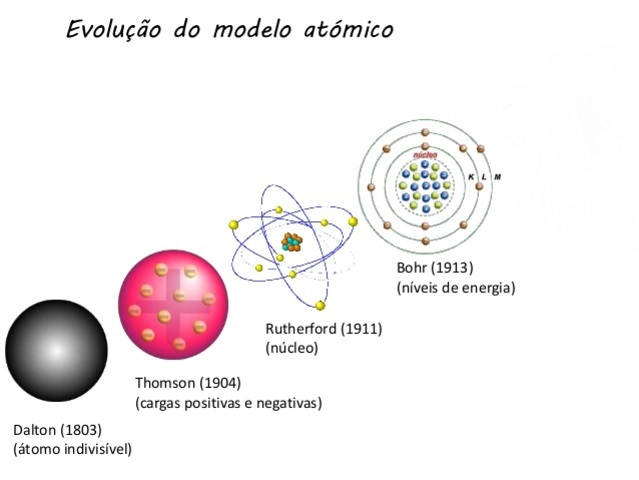

Modelos atomicos
Trabalho TP1 - CREDITOS

O que são os modelos atomicos?
Os modelos atômicos são representações simplificadas de como os átomos são estruturados e como eles interagem. Eles são usados para nos ajudar a entender o comportamento dos átomos e explicar fenômenos químicos. Os modelos atômicos são como "desenhos" dos átomos, que nos permitem visualizar e conceituar suas partes e como elas se relacionam.
Neste site, vamos explorar os modelos atômicos que moldaram nossa compreensão da estrutura dos átomos ao longo do tempo. Abordaremos quatro dos modelos mais influentes: Dalton, Rutherford, Thomson e Bohr. Cada um desses cientistas contribuiu com ideias revolucionárias que nos ajudaram a desvendar os segredos dos átomos. Preparem-se para embarcar em uma jornada através do mundo microscópico enquanto explicamos e contextualizamos os modelos de Dalton, Rutherford, Thomson e Bohr.
 Modelos atômicos Modelos atômicos |
||||
|---|---|---|---|---|
| Pagina inicial | Modelo de Dalton | Modelo de Thomson | Modelo de Rutherford | Modelo de Bohr |